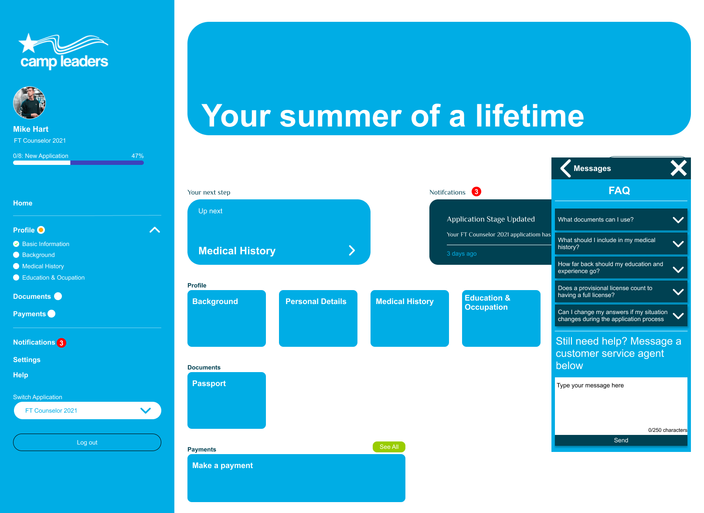

Bespoke Messaging System
The Task
The task for this project was to design a bespoke messaging system that allowed users to contact customer support and view FAQs, it was also important that the design was completed in such a way that allowed for it to be easily changed to fit different branding.
The Requirements
The requirments of this project were straight forward, below is a list of them
- Participants should be able to send and receive messages to and from customer service at any stage in the application process
- If a customer service agent starts a chat the participant needs to be notified
- Messages need a 250 character limit
- Participants shouldn’t have to leave their current page to send a message
- Message history should be kept for participants to view if they change pages mid conversation
- Easily interchangeable colour scheme
- Before a participant asks a question to a customer service agent they should be shown a set of FAQ’s
The Process
Due to the much stricter operating bounds of this project a slightly different approach was taken to develop a solution, because of the list of requirements provided by the client the first step was to analyse these requirements and ensure I understood what they meant, from there I began to wireframe out some ideas and then move onto high-fidelity mock-ups which were prototyped and tested with users to see if the solution worked.
Wireframing
As there was already a layout of the current system provided by the client the first stage of wireframing was to sketch this out, from there it was clear the path to take was a widget style system with a button/icon to open a popup message/faq screen

High-Fidelity Mockups
Having already produced wireframes for initial research, the design phase could move straight into high-fidelity mockup making, the current website that sells this candle doesn’t have much in terms of feel or brand so near complete freedom was allowed with this. The photo shows the final design that was chosen.
Testing
Testing was conducted with a small set of users, with this they were asked to carry out some basic tasks such as “navigate to your messages with “Amy Baker”, these tests were a success as each user was able to carry out each task sufficiently.
The Solution
Having followed through this process, I believe that the solution proposed meets all of the clients requirements but also works brilliantly for the user, this can be seen as a result of the user testing. If this project were carried on further there is room for improvement, making the prototypes more complex to do more user testing is just one step that could be taken. However, the solution provided as a whole is successful in meeting the requirements.